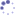

<div id="home">

  <h1>Latest Blog Posts <a href="posts.html">&nbsp;&#0187;</a></h1>
  <ul class="postlist">
    {% for post in site.posts limit:10 %}
      <li><span class='time'>{{ post.date | date_to_string }}</span> <a href="{{ post.url }}">{{ post.title }}</a></li>
    {% endfor %}
  </ul>
 
	<h1>Latest Twitter Updates <a href="http://twitter.com/garyhodgson">&nbsp;&#0187;</a></h1>
	<ul class="tweets" id="twitter_update_list"></ul>

</div>
  
<script type="text/javascript" src="http://twitter.com/statuses/user_timeline/garyhodgson.json?callback=twitterCallback2&amp;count=5"></script>
